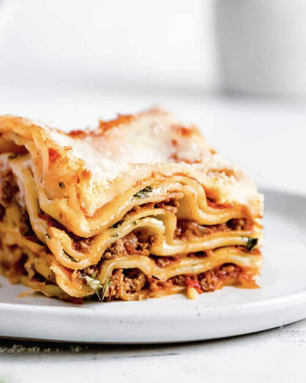

Lasagna

Description
A traditional lasagna, with about half the time and effort!
Serve with garlic toast and salad. Directly robbed and plaigiarized
from allrecipes.com
This lasagna is gonna be so jumpin that you'll slap yo momma and drive off a cliff!
Nutritional Facts: Per Serving: 736 calories; protein 43.8g;
carbohydrates 62.5g; fat 34.6g; cholesterol 103.8mg; sodium 1452.5mg
Ingredients
- 1 lb ground beef
- 1 lb bulk italian sausage
- 1/2 cup warm water
- 1 cup sliced black olives
- 1 pinch basil
- 2 tsp. garlic powder
- 1 tbsp. dried oregano
- 1 1/2 tsp. dried sage
- 2 tsp. ground black pepper
- 2 tbsp. minced garlic
- 1 tbsp. dried onion flakes
- 14 oz. marinara sauce
- 16 oz. lasagna noodles
- 8 oz. ricotta cheese
- 1 lb mozzarella cheese, shredded
Steps
- Brown the ground beef and Italian sausage in a large skillet over medium-high heat.
Drain excess grease. Stir in the water and black olives, and season with basil, garlic powder,
oregano, sage, pepper, minced garlic, and onion flakes. Simmer for about 15 minutes, stirring frequently.
Stir in the marinara sauce, and remove from the heat.
- Preheat the oven to 375 degrees F (190 degrees C).
- Place a layer of the meat and sauce in the bottom of a 9x13 inch baking dish. Cover with a layer of dry noodles.
Spread a thin layer of ricotta cheese over the noodles, and sprinkle with a little mozzarella cheese. Cover with
another layer of sauce, and repeat layering ending with the meat and sauce on top. Reserve about 1/2 cup of mozzarella
cheese for later.
- Bake for 45 minutes in the preheated oven, but check after 30 minutes depending on how thick the lasagna is. Lasagna is
cooked when you can easily stick a knife into it. Sprinkle the reserved cheese over the top, and return to the oven for about
10 minutes for a nice melted cheese topping.